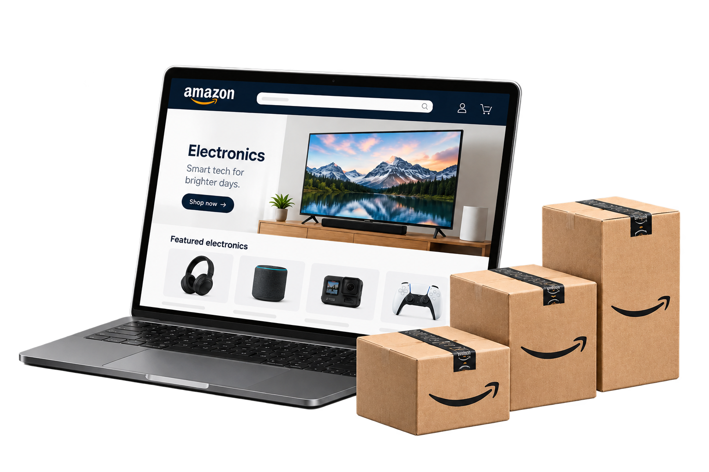

TCL ELECTRONICS EUROPE
MINI LED / SQD-MINI LED
A brighter kind
of premium.

DISCOVERYCONVERSIONGROWTHExplorer
by instinct.
I’m Shirley. I’ve spent the past decade taking global brand ambitions into local markets and asking what it takes to make them matter. I build brands with a point of view, then connect that point of view to work that changes perception, earns preference and drives growth. Because the real test of a brand is what people believe about it, and what they choose to do next.
MINI LED / SQD-MINI LED

DISCOVERYCONVERSIONGROWTHA connected practice, not a checklist.